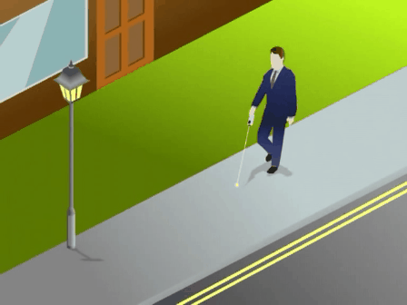

<!--
  Generated template for the GamePage page.

  See http://ionicframework.com/docs/components/#navigation for more info on
  Ionic pages and navigation.
-->
<ion-header>

  <ion-navbar>
    <ion-title>Game</ion-title>
  </ion-navbar>

</ion-header>

<ion-content>
  <div
    style="border: 3px solid black;background-color: black; font-family: 'Lucida Sans', 'Lucida Sans Regular', 'Lucida Grande', 'Lucida Sans Unicode', Geneva, Verdana, sans-serif">
    <h1 style="color: white;text-align: center;">PONTUAÇÃO: </h1>
    <div>
      <h1 style="color: red;text-align: center;">{{pontuacao}}</h1>
    </div>
  </div>
  <br>
  <div style="border: 3px solid black;background-color: black; ">
    <h1 style="color: white;text-align: center;">TEMPO: </h1>
    <div>
      <h1 style="color: white;text-align: center;">{{timerVal}}</h1>
    </div>
  </div>

  <br>
  <button id="stopGame" alt="Botão para finalizar o jogo" ion-button style="height:57px" block (click)="stopGame()">
    Parar </button>
  <br>
  
</ion-content>
